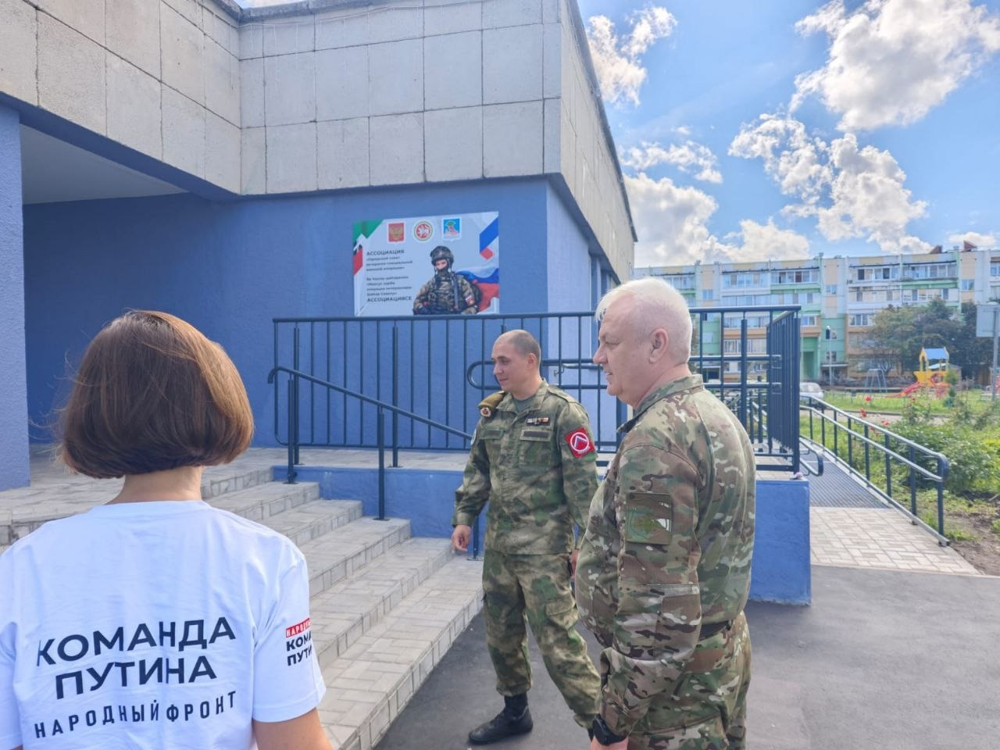
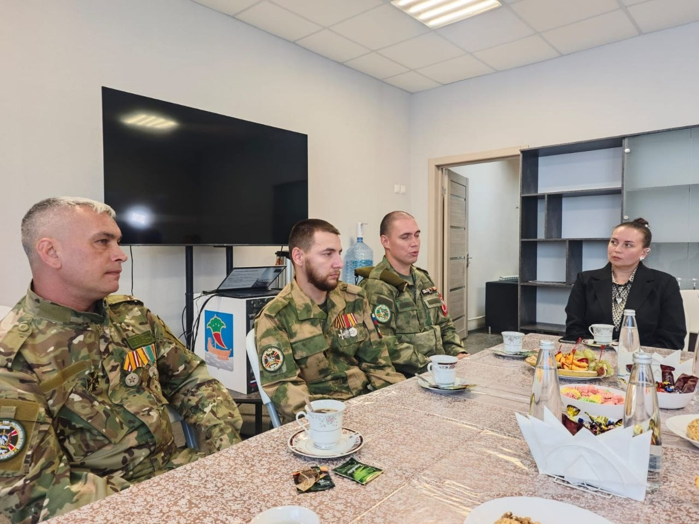
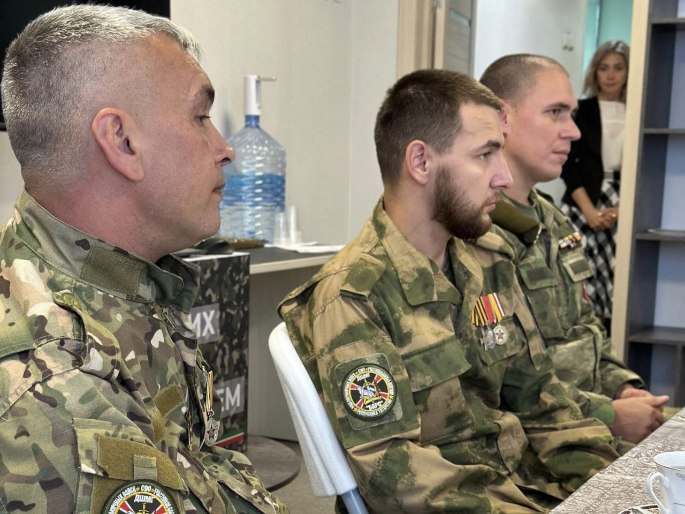
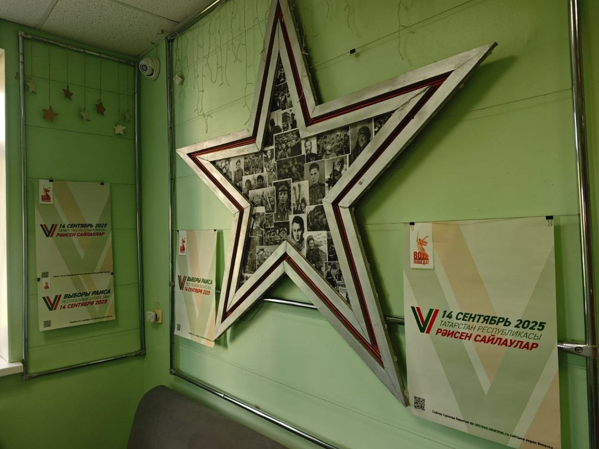
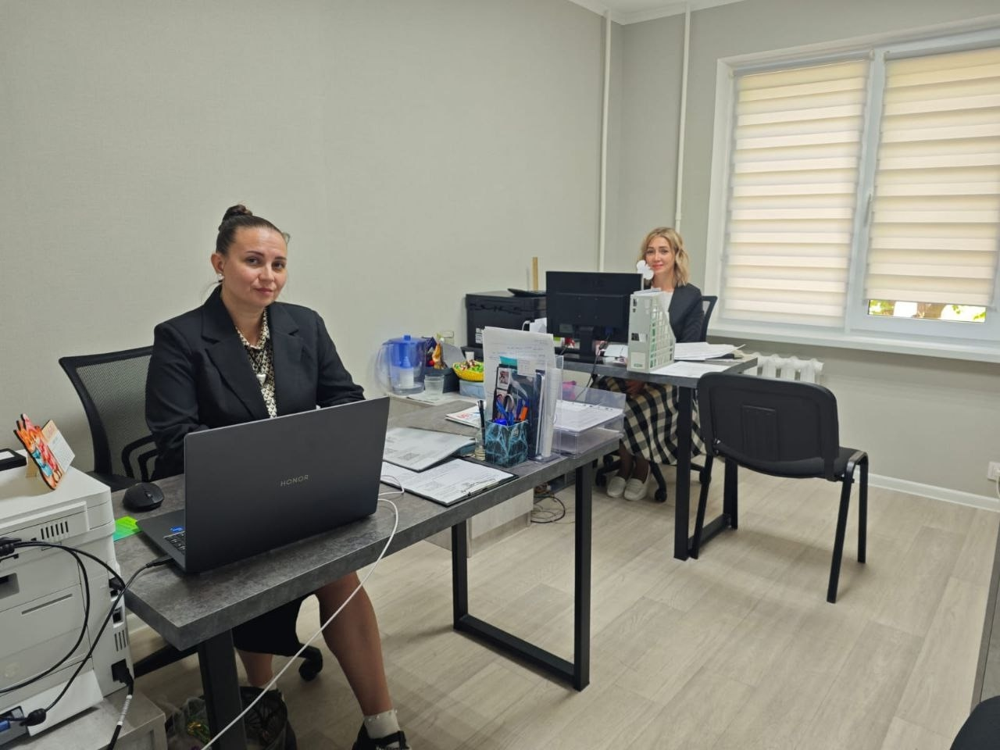
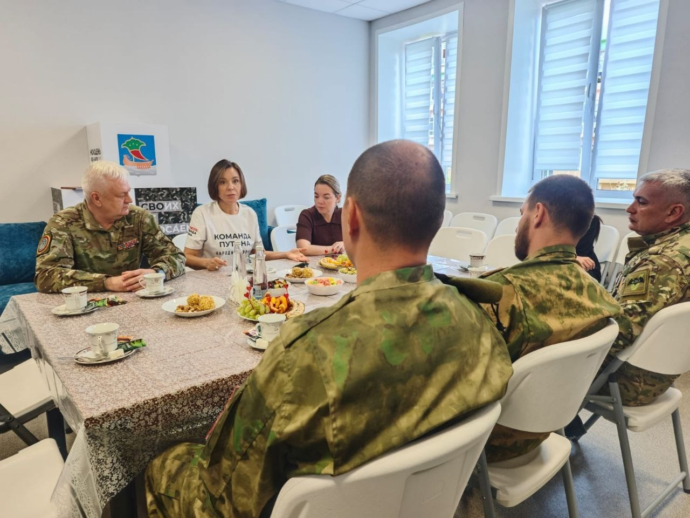
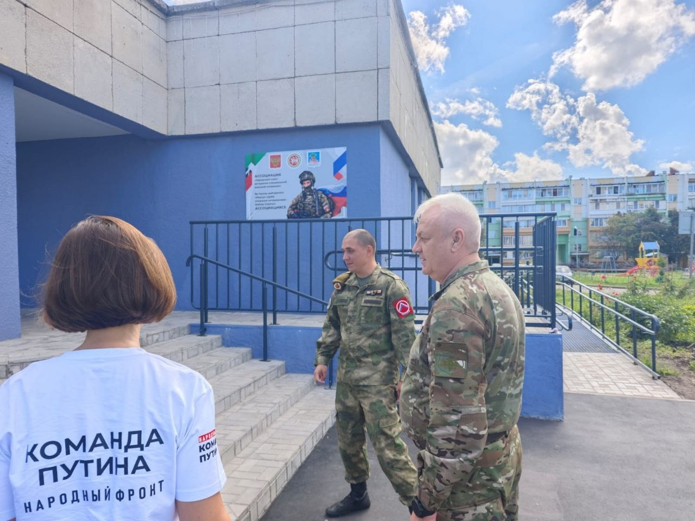
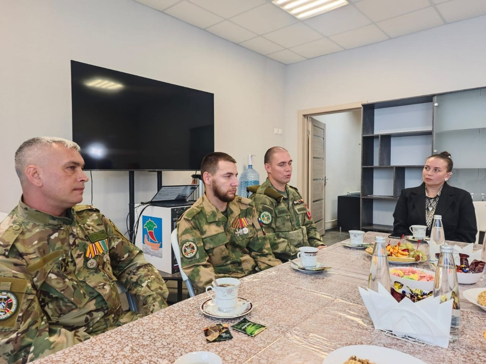
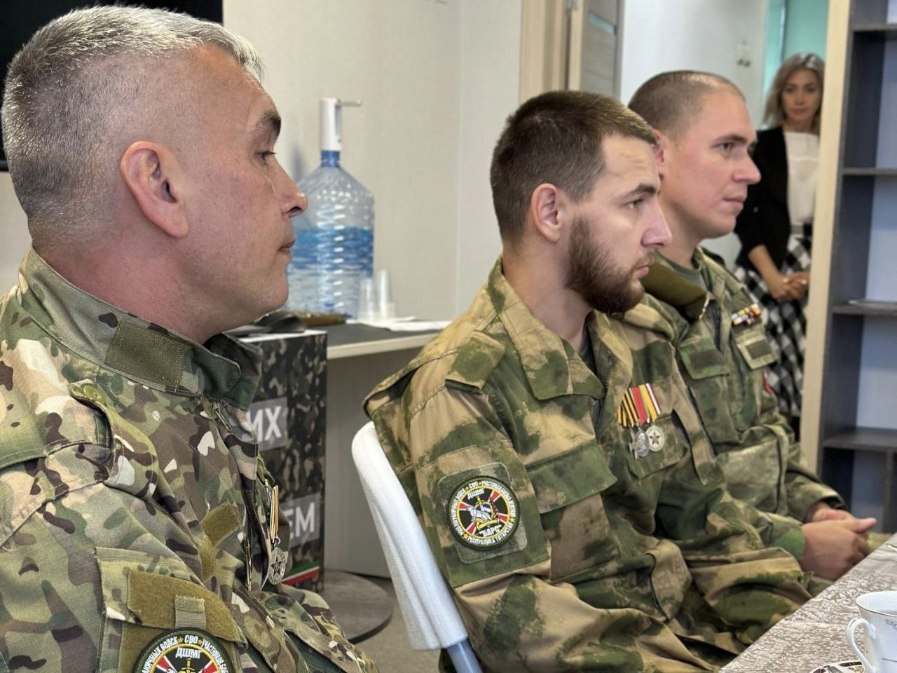
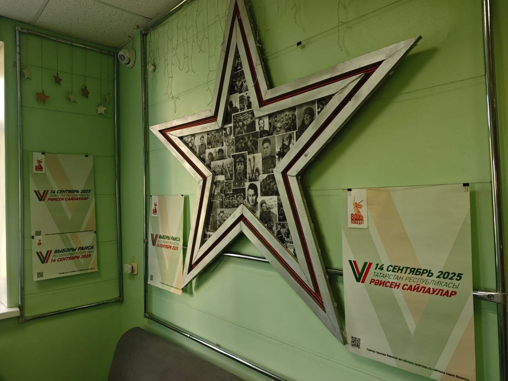
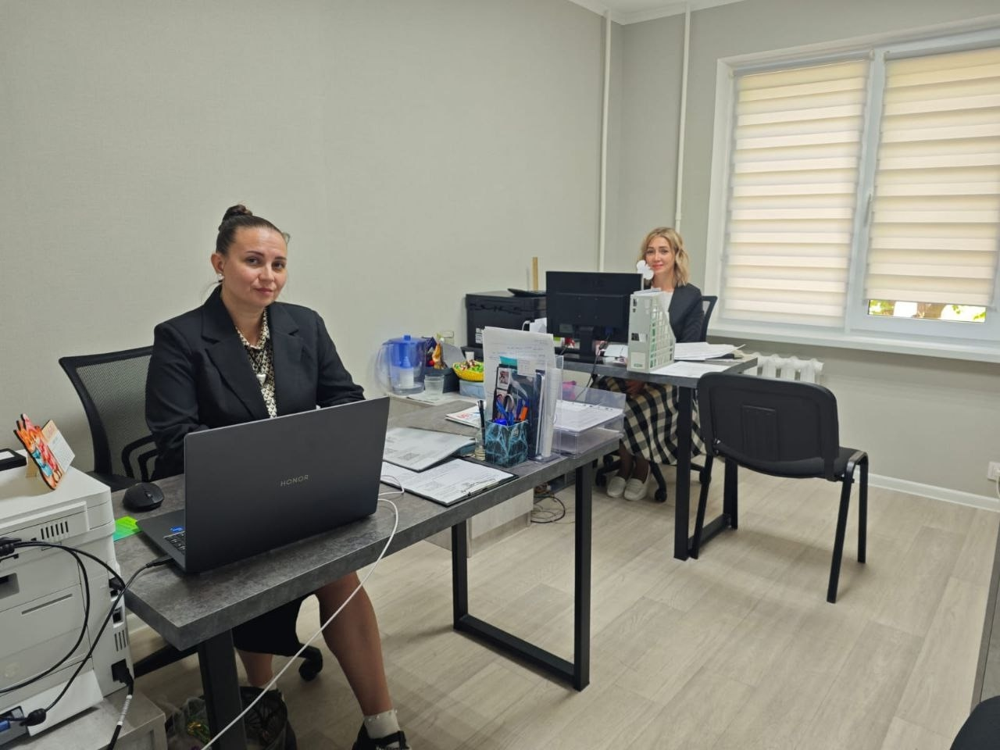
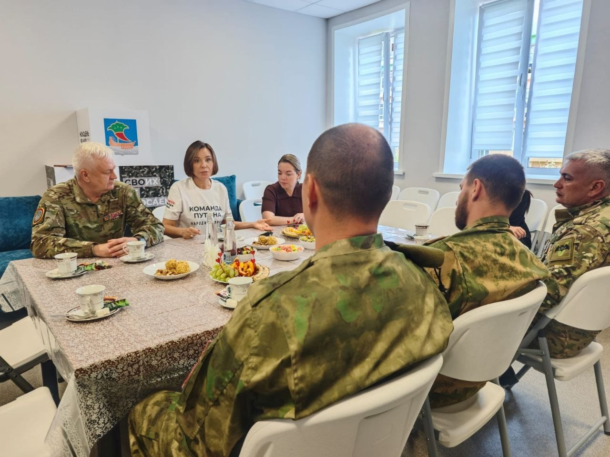
01 февраля 2026
25.08.2025 года Ассоциацию "Городской Совет ветеранов СВО" г. Набережные Челны посетила депутат Госдумы Когогина Альфия Гумаровна. Она отметила,что в офисе Горсовета созданы все условия для оказания помощи и поддержки участникам СВО и их семьям. За чашкой чая Альфия Гумаровна тепло пообщалась с участниками СВО, ветеранами боевых действий, а также с сотрудниками Горсовета. Обсудили насущные проблемы и вопросы, а также планы сотрудничества.